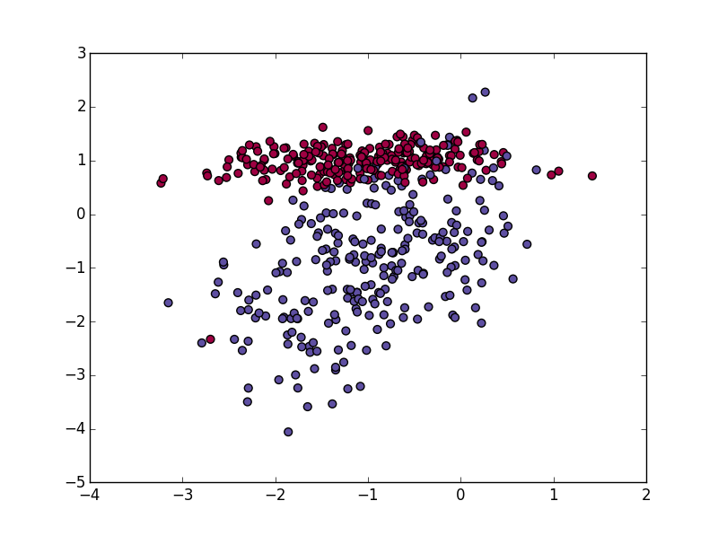
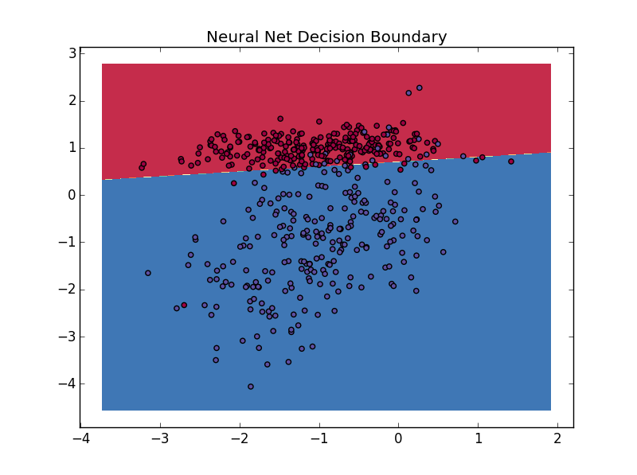
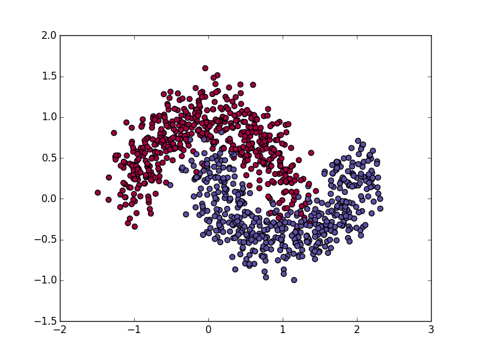
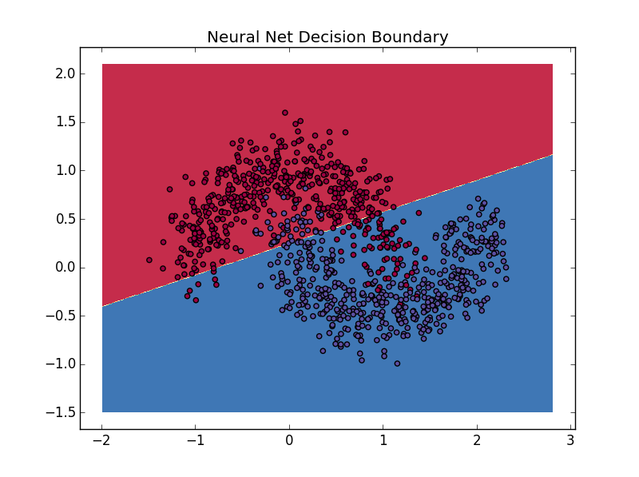
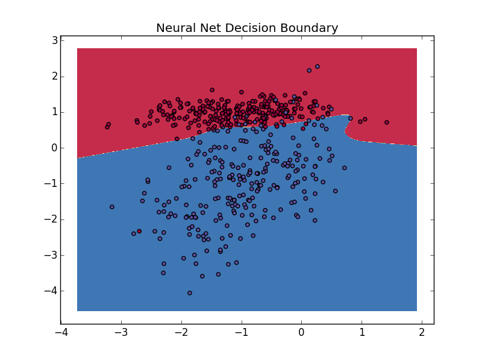
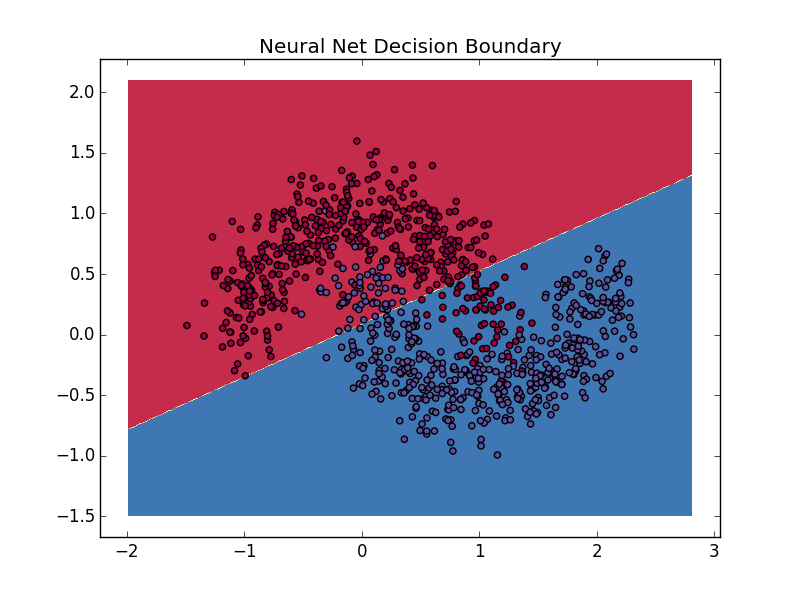
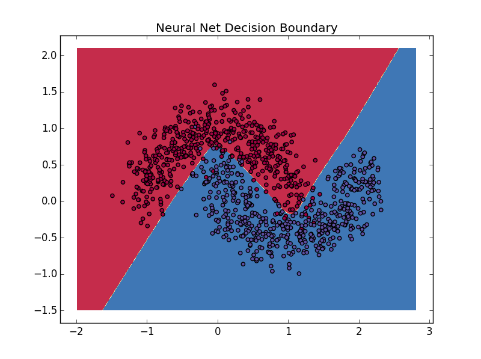
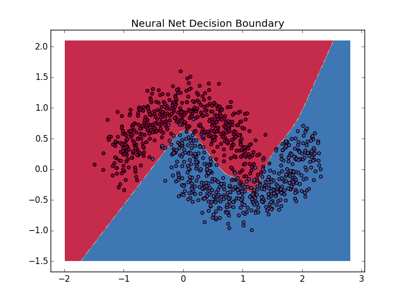

Problem Definition
In this project, we learn how to implement a basic neural network. According to what we have learned in class, we use the formulas from class along with the template from lab4 to get started on our compute_cost and predict functions, providing minor alterations. The most significant portion of this project is the creation of the fit function, which implements back propagation. Our edits to the lab template are made to account for hidden layers.
Method and Implementation
In our implementation of the basic neural net, we edited the lab 4 template to account for hidden layers and created the fit function to graph our results.
There are three major functions used in our program:
Compute_cost: We first implement forward propagation in this method and then calculate the cross-entropy loss to determine the cost of the neural net.
Predict: This method is the easiest one among those three. We simply use forward propagation to make a prediction based on current model parameters.
Fit: This is the most important and difficult method among all. Using the method disscussed in the article "Implementing a Neural Network from Scratch in Python: An Introduction". We are able to implement a good fit function using forward propagation, back propagation, and updating the model parameters by using gradients.
My contribution
I provided significant contribution in the coding of all functions as well the answering of the lab questions and the production of the experiment images.
Experiments and Results
| Q1. | |
|  |  |
| Answer for Q1: Shown above. | |
| Q2 | |
|  |  |
| Answer for Q2: The 2-layer neural network model cannot learn non-linear decision boundaries. This is because the non-linear decisions require one or more hidden layers in order to increase the accuracy of the output. The non-linear decision obviously can not be represented by a single line. Instead, it requires a plane to show the output geometrically. For example, while the logical operation AND and OR can be learned by linear model, the XOR cannot. | |
| Q3 | |
|  | |
| Answer for Q3: The 3-layer neural network model can learn non-linear decision boundaries. As illustrated above, as the number of hidden layers increases, the accuracy will increase correspondingly. For the given data, by increasing the number of nodes in the hidden layer will give a good result. Here we have a good fit on both the linear (left) and nonlinear (right) data sets. | |
| Q4 | |
|  | |
| Answer for Q4: Theoretically, the larger the learning rate is, the larger the weight changes on each epoch, and thus the quicker the network learns. However, the learning rate also affect the stability. When the learning rate gets too large, the oscillation of weights might occur. In the above image on the left, we have a learning rate of 0.01. When we change it to 0.1 (on the right) we lose stability and our program produces a linear fit. | |
| Q5 | |
|  | |
| Answer for Q5: Theoretically the more nodes the hidden layer has, the more accurate the curve fit. However, when there are too many nodes, overfitting might occur. On the left, we show 4 nodes in the hidden layer, while on the right we have 6. You can see that overfitting occurs on the right. | |
| Q6 | |
| Answer for Q6:. Overfitting is a phenomenon that occurs when the model does not generalize the data well. The 3 ways to reduce overfitting are: 1) regularization. This modifies the objective function that we minimize by adding additional terms that penalize large weights. 2) Max norm constraints. These constraints enforce an absolute upper bound on the magnitude of the incoming weight vetoer for every neuron and use projected gradient descent to enforce the constraint. 3) Dropout. This method prevents the network from becoming too dependent on any on (or any small combination) of neurons by keeping a neuron active with some probability or setting it to zero otherwise. (http://www.kdnuggets.com/2015/04/preventing-overfitting-neural-networks.html) |
|
| Q7 | |
|  |  |
| Answer for Q7: L2 regularization reduces overfitting by adding 1/2 (lambda)w^2 to the error function for every weight w. As illustrated above, the curve of the left image has a more obvious pattern due to regularization. The curve on the right image has a less obvious pattern due to a lack of regularization. In reality, the appropriately fitted curve will reduce the amount of work it takes to figure out the model for the data, as shown above. |
Discussion
Discuss your method and results:
- Strengths:Our implementation of the fit method can handle unlimited numbers of layers. The more layers we input, the more accurate result we will have and the stronger learning ability the AI has.
- Weaknesses: The program sometimes performs unstable.
Credits and Bibliography
Works Cited: Britz, Denny. "Implementing a Neural Network from Scratch in Python, An Introduction." WildML. N.p., 3 Sept. 2015. Web. 21 Feb. 2016.
Work with Lai Wei, Shirui Ye and Chang Gao